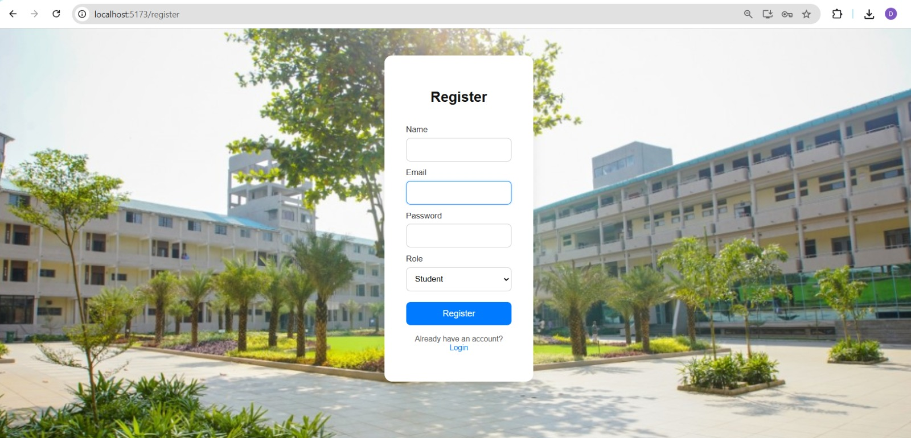
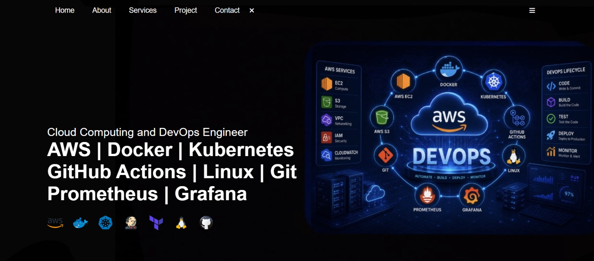
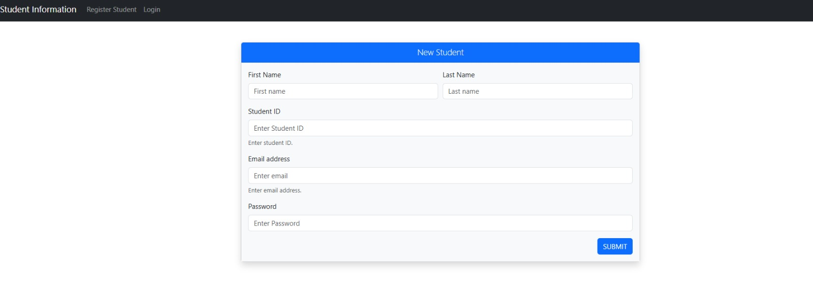
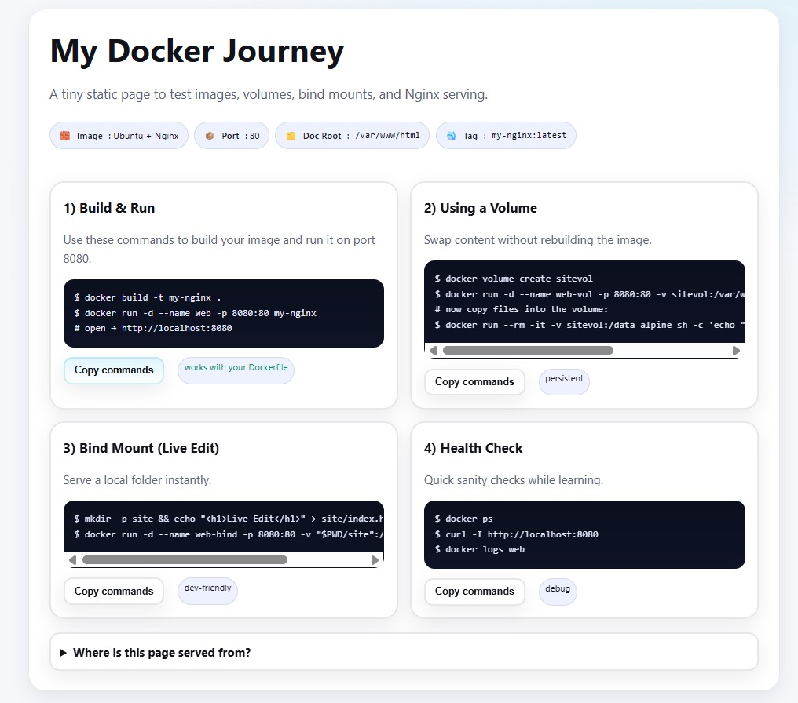
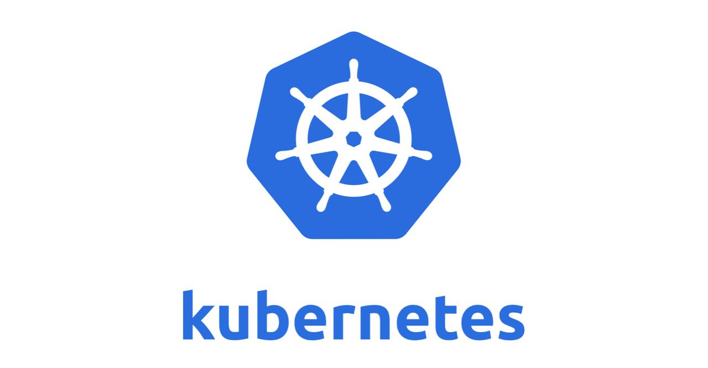
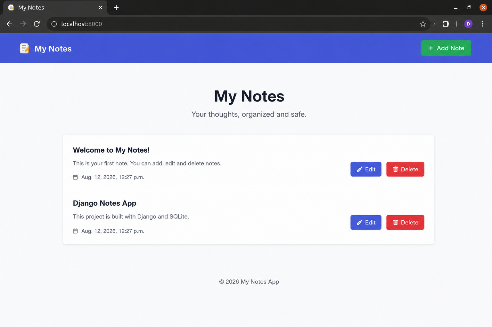

DevOps Projects

Student Feedback System
A student feedback application with containerization and modern deployment practices.
Key Features
- Student feedback management
- Docker containerization
- Kubernetes deployment
- GitHub Actions

Digvijay Portfolio
A personal portfolio website showcasing projects, technical skills and professional information.
Key Features
- Personal portfolio
- Projects showcase
- Technical skills
- Responsive design

Tic-Tac-Toe Game
An interactive browser-based Tic-Tac-Toe game built using JavaScript.
Key Features
- Interactive gameplay
- JavaScript game logic
- Win detection
- Responsive interface

3-Tier Application
A multi-tier application separating frontend, backend and database services using Docker Compose.
Key Features
- Frontend and backend separation
- MongoDB database
- Docker containerization
- Docker Compose

Modern Todo Application
A modern Todo application demonstrating containerization, database integration and CI/CD deployment practices.
Key Features
- Todo management
- MySQL database
- Docker containerization
- CI/CD automation

Docker Learning Project
A hands-on Docker project demonstrating automated image building and Docker Hub integration.
Key Features
- Docker image creation
- Docker Hub integration
- GitHub Actions workflow
- Automated image build

Kubernetes Deployment Project
A Kubernetes-focused project demonstrating container orchestration and application management.
Key Features
- Kubernetes resources
- Container orchestration
- Deployment configuration
- YAML manifests

Notes App
A notes application using containerization and Kubernetes deployment concepts.
Key Features
- Notes management
- Docker containerization
- Kubernetes deployment
- Scalable architecture
Two-Tier Application
A two-tier application demonstrating separation between application and supporting services.
Key Features
- Two-tier architecture
- Docker deployment
- Linux environment
- Application setup

CI/CD Projects
A collection of CI/CD-focused projects demonstrating automation and continuous integration workflows.
Key Features
- CI/CD workflows
- GitHub integration
- Automation
- Continuous integration